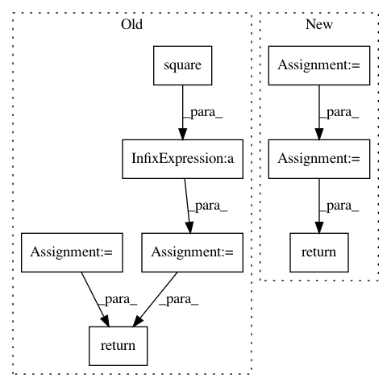

bd1e9c04b48dd5ccca9619d5eaa2595a358bdb08,gpflow/kernels/misc.py,Coregion,K_diag,#Coregion#Any#Any#,152
Before Change
def K_diag(self, X, presliced=False):
X, _ = self.slice(X, None)
X = tf.cast(X[:, 0], tf.int32)
Bdiag = tf.reduce_sum(tf.square(self.W), 1) + self.kappa
return tf.gather(Bdiag, X)
After Change
theta = tf.acos(jitter + (1 - 2 * jitter) * cos_theta)
return self.variance * (1. / np.pi) * self._J(theta) * \
X_denominator[:, None] ** self.order * \
X2_denominator[None, :] ** self.order
def K_diag(self, X):
X_product = self._weighted_product(X)
const = tf.cast((1. / np.pi) * self._J(0.), default_float())
return self.variance * const * X_product**self.order
In pattern: SUPERPATTERN
Frequency: 3
Non-data size: 8
Instances
Project Name: GPflow/GPflow
Commit Name: bd1e9c04b48dd5ccca9619d5eaa2595a358bdb08
Time: 2020-01-31
Author: st--@users.noreply.github.com
File Name: gpflow/kernels/misc.py
Class Name: Coregion
Method Name: K_diag
Project Name: NifTK/NiftyNet
Commit Name: 7d9d506e77585e5600b45dc41da1a731a4b30722
Time: 2017-04-27
Author: z.eaton-rosen@ucl.ac.uk
File Name: nn/loss.py
Class Name:
Method Name: sensitivity_specificity_loss
Project Name: ray-project/ray
Commit Name: ce96b03b07a4a4bdd851aa84493c616cd291aff2
Time: 2020-10-06
Author: sven@anyscale.io
File Name: rllib/examples/env/mbmpo_env.py
Class Name: HopperWrapper
Method Name: reward